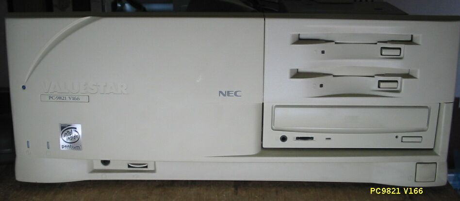
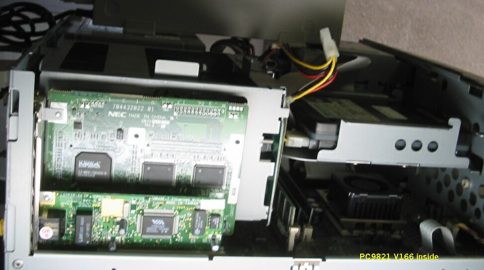

PC9821 V166


比較的新しいPC98を入手しました。V166/S7Cで、V3桁のPC98は初めてです。
入手したときの 状態は次のようになっていました。
・RAM 32MB； DIMMスロットに32MBをさし、64MBに増設
・HD 無し； Caviar1210を取り付け
・MGAビデオボードPCI-1； 抜かないでくださいとのこと
・PCI-2 無し ； LGI-PCI-TR追加
とりあえず使い道がないので、これ以上手を加えずに、コレクションの１台として保存する ことにしました。
(2003/06/20 記)
PC9821のページに戻る